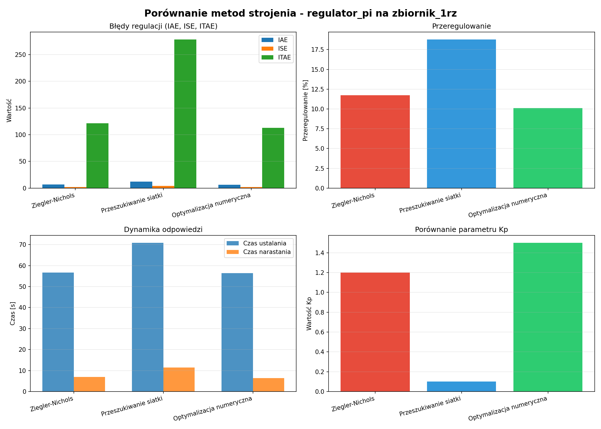

[ANALIZA] Raport Porównawczy Metod Strojenia
Regulator: regulator_pi
Model: zbiornik_1rz
Data wygenerowania: 2025-11-25 21:36:02
Porównanie Parametrów
| Metoda | Kp | Ti | Td |
|---|
| Ziegler Nichols |
1.2 |
12.5 |
None |
| Siatka |
0.1 |
2.0 |
None |
| Optymalizacja |
1.5 |
15.0 |
None |
[WYKRESY] Porównanie Metryk Jakości
| Metoda | IAE | ISE | ITAE | Przeregulowanie [%] | Czas ustalania [s] | Czas narastania [s] |
|---|
| Ziegler Nichols |
6.8738 |
2.2158 |
121.3890 |
11.7414 |
56.6000 |
6.9493 |
| Siatka |
12.3740 |
4.4936 |
278.1496 |
18.7716 |
70.8000 |
11.4758 |
| Optymalizacja |
6.2232 |
1.9422 |
112.9250 |
10.0935 |
56.4000 |
6.4063 |
Najlepsze wartości dla każdej metryki są podświetlone na zielono.
📉 Wykresy Porównawcze

Wnioski
Najlepsza metoda (wg IAE): Optymalizacja numeryczna
IAE: 6.2232
Porównanie z innymi:
- Ziegler-Nichols: IAE=6.8738 (+10.5%)
- Przeszukiwanie siatki: IAE=12.3740 (+98.8%)